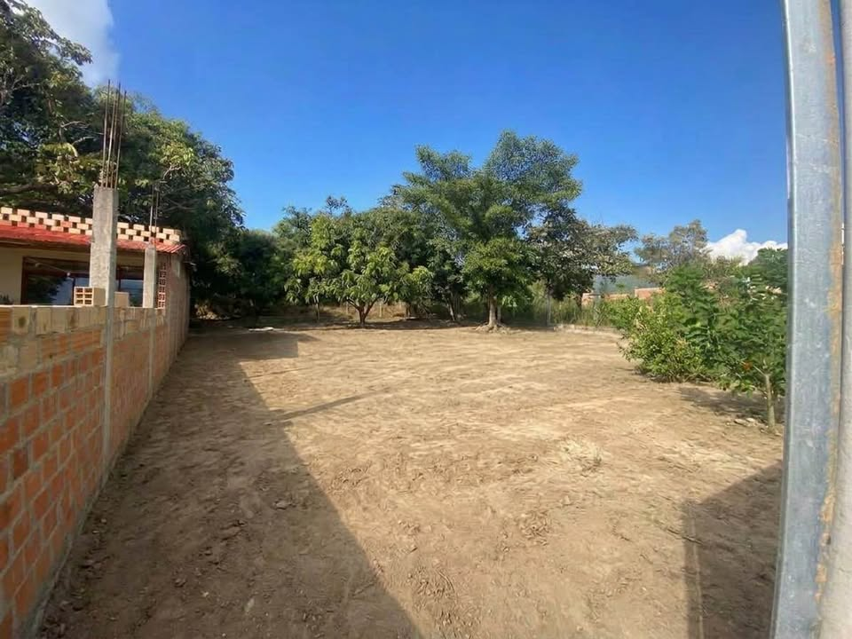

PEN73 140 m²

Se vende terreno urbano con ubicación estratégica en Lamas, ideal para construir la casa de tus sueños, un proyecto multifamiliar o negocio turístico. La propiedad se encuentra en una zona tranquila, de fácil acceso y con alta plusvalía.✅ Características del Terreno: Ubicación: Zona urbana en Lamas (San Martín). Servicios Básicos Disponibles: Cuenta con conexiones habilitadas de Agua, Luz y Desagüe (Listo para tramitar medidores). Documentación: Totalmente en regla, listo para transferencia inmediata ante notario. Topografía: Terreno listo para construir.